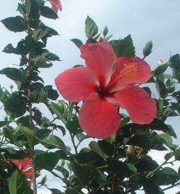

gumamila 
/gumamila/
n.
a large red flower
Ew, seini bes ka bulak ne gumamila. Masalig ma seini diyè te baley ney piru warà a nekeila te ngaran.
Oh, this is a gumamila flower. There's many at our house but I didn't know the name.
Eng. hibiscus
Online dict status: -
Usage level: R
Updated by: RJH,AAA,RJH
Last updated: 14/Jul/2015
This page last updated: 28-Dec-2019
Copyright © 2009-2014, Matigsalug Language Christian Association, Inc